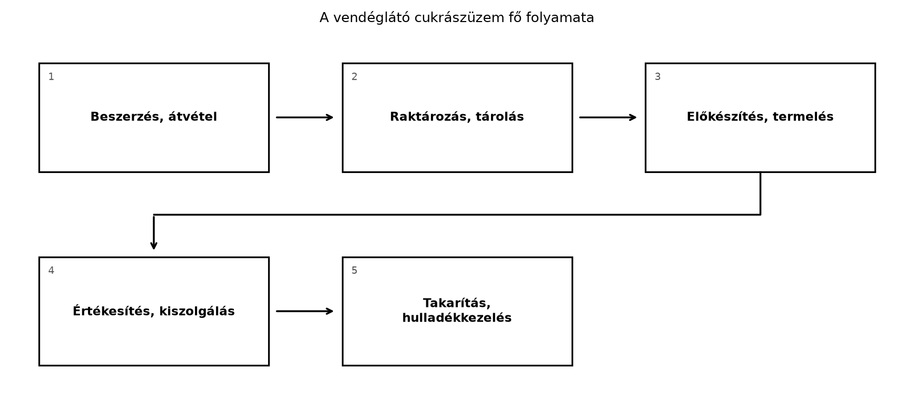

Képzeld el, hogy egy kisebb cukrászda működését kell átlátnod. Nem elég jó tortát sütnöd: meg kell szervezned, hogy az alapanyag mindig frissen és időben beérkezzen, a termék higiénikusan és gazdaságosan készüljön, a vendég pedig a pultnál vagy az asztalnál elégedetten fizessen. Ha bármelyik lépés hiányzik – például nincs megfelelő hűtő, nincs kézmosó, vagy rossz az üzletkör-besorolás –, a hatóság bírságolhat, a termék megromolhat, a vendég pedig elmarad. Ezért a cukrásznak ismernie kell a vendéglátás fogalmát, tevékenységeit, üzletköreit és tárgyi feltételeit.
A cukrászda működése egy lánc: a nyersanyag beérkezik, a raktárból a termelésbe kerül, a késztermék a pultba, majd a vendég elé. A folyamatot szemléletesen így ábrázolhatjuk:

Ez az öt szakasz nem független: minden lépés hibája a következő lépésre is kihat. A beszerzési hiány leállítja a termelést, a rossz hűtés megrongálja a készterméket, a tisztítás elmaradása pedig élelmiszerbiztonsági kockázatot hoz létre.
Definíció. VENDÉGLÁTÁSNAK nevezzük azt a gyűjtőfogalmat, amely az ételek, italok és cukrászati készítmények üzletszerű előállítását, forgalmazását, valamint a fogyasztáshoz kapcsolódó szolgáltatások nyújtását foglalja magában. A vendéglátó üzlet olyan kereskedelmi egység, amelyben vendéglátó tevékenységet folytatnak, jellemzően helyben fogyasztással és/vagy elvitellel.
Jogszabály. A vendéglátó tevékenység folytatásának feltételeit a kereskedelemről szóló 2005. évi CLXIV. törvény, a vendéglátó üzletek kategóriába sorolásáról és üzletköri jegyzékéről szóló jogszabály, az élelmiszer-higiéniai 852/2004/EK rendelet, a fogyasztóvédelmi törvény, valamint a munka- és tűzvédelmi előírások határozzák meg (ellenőrizendő: az üzletköri rendelet pontos száma és a hatályos felsorolás).
Higiénia. A tárgyi feltételek kialakításakor már a tervezésnél érvényesülnie kell a HACCP-alapú szemléletnek: a helyiségek és eszközök legyenek tisztíthatók, fertőtleníthetők, a nyers és késztermékek útja ne kereszteződjék, a hűtőkapacitás igazodjon a termeléshez. A cukrászüzem kialakításáról és a szakosított tárolásról a A vendéglátó üzlet és a cukrászüzem kialakításának higiéniai feltételei és a Nyersanyagok beszerzése, átvétele, tárolása és előkészítése alfejezetekben tanultál.
A vendéglátó üzlet alaptevékenysége az, amiért a vendég betér: cukrászati készítmények, ételek, italok előállítása és értékesítése, valamint a fogyasztáshoz kapcsolódó szolgáltatás. Ezt három főtevékenységi területre bontjuk: termelés, értékesítés, szolgáltatás.
A termelés a cukrászüzem technológiai folyamata: az alapanyagokból tésztákat, krémeket, bevonatokat, majd késztermékeket készítünk. Ide tartozik az előkészítés, a mérés, a keverés, a sütés, a kikészítés, a hűtés és a csomagolás. A cukrász termelő és kereskedő is egyszerre: nemcsak előállítja a terméket, hanem a saját üzletében értékesíti is. A termelés ütemezése a rendelésekhez és az eltarthatósághoz igazodik; a krémes, tejszínes termékeket frissen kell készíteni, a tartósabb teasüteményeket lehet előre.
Az értékesítés a késztermékek átadása a vendégnek, helyben fogyasztásra vagy elvitelre, készpénzes vagy bankkártyás fizetéssel, nyugtával vagy számlával. Az értékesítési rendszer lehet:
Minden értékesítésnél kötelező a nyugtaadás, a fogyasztói tájékoztatás (árak, allergének, termék megnevezése) és az élelmiszerbiztonsági szabályok betartása.
A szolgáltatás minden olyan tevékenység, amely a vendég kényelmét, tájékoztatását, a fogyasztás élményét növeli: tiszta asztal, terítés, felszolgálás, allergén tájékoztatás, csomagolás, mosdó, gyors kiszolgálás, udvarias kommunikáció. A cukrászdában a szolgáltatás része az is, ha a dolgozó elmagyarázza, milyen töltelék van a süteményben, vagy segít kiválasztani a megfelelő tortát.
Szabály. A főtevékenységek nem választhatók el élesen. A vendég akkor elégedett, ha a termék jó, az értékesítés gyors és pontos, a szolgáltatás pedig udvarias és tájékozott.
A melléktevékenységek a főtevékenységet kiszolgáló folyamatok. Nem láthatók közvetlenül a vendég számára, de nélkülük a főtevékenység nem működik. Ide tartoznak:
Megjegyzés. A mellékfolyamatokat gyakran alábecsülik, pedig egy elmaradt mosogatás vagy egy hibás hűtő ugyanúgy megállíthatja az értékesítést, mint egy rossz recept.
A beszerzés célja, hogy a termelés folyamatos legyen, de ne kössön le feleslegesen sok pénzt, és ne halmozzon fel romlandó készletet. A cukrászüzemekben több beszerzési módot is alkalmazhatunk.
A cukrászüzemnek legalább minimális készletet kell tartania ahhoz, hogy a termelés ne álljon le; de a maximális készletet a tárolótér és az eltarthatóság korlátozza. Gyakorlati egyszerűsített képlet:
Példa. Ha napi 10 l tej fogy, a szállítási idő 2 nap, a biztonsági készlet 5 l, akkor a rendelési pont:
Amikor a készlet 25 l alá csökken, rendelni kell. Ez tanulási példa; a pontos rendelési gyakorlatot a Készletgazdálkodás: átlagkészlet, áruforgalmi mérlegsor, forgási sebesség alfejezet részletezi.
Higiénia. A beszerzéskor a Nyersanyagok beszerzése, átvétele, tárolása és előkészítése alfejezet szerinti átvételi ellenőrzést kell elvégezni: hőmérséklet, csomagolás, szavatosság, allergén jelölés, nyomon követés.
A beérkezett árut szakosítva, a tárolási hőmérsékletnek megfelelően kell elhelyezni, a FIFO/FEFO elv szerint. A raktárból a termelésbe kiadás dokumentált (anyagkiadás, készletcsökkenés). A raktározás puffert képez a beszerzés és a termelés között; itt érvényesül a nyomon követhetőség is. A raktározás részletes higiéniai szabályait a Nyersanyagok beszerzése, átvétele, tárolása és előkészítése alfejezet tartalmazza.
A cukrászüzemben a nyersanyagból félkész és késztermék lesz. A termelés jellemzői: kis- és közepes tételnagyság, kézi munka, technológiai fegyelem, veszteség- és hozamszámítás, minőség-ellenőrzés minden lépésnél. A termelést a rendelésekhez és az eltarthatósághoz kell igazítani. A termelés részletes megszervezését a Munkaszervezés és a cukrászüzem munkafolyamatainak tervezése alfejezetben tárgyaljuk.
A cukrászda értékesíthet pultból, asztali kiszolgálással, önkiszolgáló rendszerben, valamint rendelésre és csomagküldéssel. Minden értékesítésnél kötelező a nyugtaadás, a fogyasztói tájékoztatás és az élelmiszerbiztonsági szabályok betartása.
Jogszabály. A fogyasztók tájékoztatása az 1169/2011/EU rendelet szerint történik; a pultban árult (nem előre csomagolt) termékeknél legalább a megnevezést, az allergéneket és az árat kell közölni; az előre csomagolt termék címkéjén a nettó mennyiség is kötelező (ellenőrizendő: 1169/2011/EU és a hazai végrehajtási rendelet, a vendéglátásra vonatkozó konkrét jelölési szabályok).
Definíció.
- Üzem: a termelő, előállító helyiségcsoport (például
cukrászüzem, konyha), ahol a technológiai folyamat zajlik.
- Üzlet: a vendégfogadásra, értékesítésre, fogyasztásra
szolgáló kereskedelmi egység (például cukrászda eladótér, kávézó
asztaltér).
- Üzletkör: a hatósági engedélyben vagy
nyilvántartásban meghatározott tevékenységi kör, amely megmondja, milyen
termékeket és szolgáltatásokat kínálhat az üzlet. A cukrászda üzletkör
jellemzően cukrászati készítmények, fagylalt, kávé, tea, hideg és meleg
italok forgalmazását engedi.
| Üzletkör | Jellemző tevékenység | Helyben fogyasztás | Elvitel | Jellemző termékek |
|---|---|---|---|---|
| Cukrászda | Cukrászati készítmények előállítása, forgalmazása | jellemző, pult és asztal | gyakori | torták, sütemények, fagylalt, kávé |
| Kávézó | Kávé, tea, kakaó, hideg italok, sütemény | jellemző | ritkább | kávékülönlegességek, sütemény |
| Fagylaltozó | Fagylalt, jégkrém, poharas desszert | helyben is, de gyakran elvitel | gyakori | gombóc fagylalt, kehely |
| Büfé | Gyorsan fogyasztható ételek, italok | állva vagy ülve | gyakori | szendvics, péksütemény, üdítő |
| Éttermi étkeztetés | Teljes étkezés, többfogásos menü | jellemző | ritkább | leves, főétel, desszert |
Megjegyzés. A táblázat általános jellemzőket mutat; a pontos üzletköri jegyzéket jogszabály tartalmazza (ellenőrizendő: az üzletkörök hatályos felsorolása).
A cukrászda olyan vendéglátó üzlet, amelynek fő tevékenysége cukrászati készítmények előállítása vagy forgalmazása. A tipikus cukrászda rendelkezik eladótérrel, vitrines hűtőpulttal, kávéfőzővel, fagylaltpulttal, asztalokkal. A termékek egy része saját üzemben készül, más része megbízható beszállítóktól érkezik. A cukrászda lehet önálló üzlet, vagy szálloda, kávéház részeként működik. Az üzletkörhöz tartozó tevékenységeket a hatályos üzletköri jegyzék szerint kell megállapítani.
A tárgyi feltételek azok a helyiségek, gépek, berendezések, eszközök és felszerelések, amelyek a vendéglátó tevékenység jogszerű és higiénikus végzéséhez szükségesek. A tárgyi feltételek kialakítását a vendéglátásra vonatkozó szabályok és az élelmiszer-higiéniai rendelet együtt határozzák meg.
Jogszabály. A tárgyi feltételek minimumkövetelményeit a vendéglátó üzletek üzletköréhez kapcsolódóan jogszabály határozza meg, az élelmiszer-higiéniai 852/2004/EK rendelet pedig a helyiségek, eszközök, hűtés, kézmosás és takarítás követelményeit írja elő. A munkavédelmi törvény és a tűzvédelmi szabályok a dolgozók és a vendégek biztonságát védik. A pontos helyiséglistát, gépfelszerelést, hőmérsékleti követelményeket az üzlet típusa és a hatályos előírások szerint kell meghatározni (ellenőrizendő: üzletköri rendelet, NÉBIH útmutatók).
Kritikus pont. A cukrászda tárgyi feltételei közül kiemelt kritikus pont a hűtőberendezés folyamatos működése, a kézmosó felszereltsége, a mosogatás hőfokfeltételei, valamint a nyers és késztermékek elkülönítése. Ha a hűtő meghibásodik, a tejszínes vagy krémes termékeket selejtezni kell, vagy helyesbítő tevékenységként átmeneti hűtésről kell gondoskodni (ellenőrizendő: hőmérsékleti határ).
Egy induló cukrászda tervezésekor a leendő vállalkozó először az üzletkört pontosítja: cukrászda, saját üzemmel. Ezután kialakítja a tárgyi feltételeket: eladótér vitrines hűtővel, konyha külön sütővel, mosogató, kézmosó, raktár, hűtőkamra. A beszerzést úgy szervezi, hogy a lisztet, csomagolóanyagot szállítási szerződéssel, a friss tejet és tojást heti kétszeri szállítással, a szezonális gyümölcsöt a piacról vagy termelőtől szerzi be, a hiányzó kis tételeket pedig cash and carry üzletben pótolja. A nyitás előtt a hatóság ellenőrzi a helyiségeket, a hűtőket, a kézmosókat, a hulladéktárolót. Ha a kézmosó nem működik, az üzlet nem nyithat meg. Tanulság: a vendéglátás tárgyi feltételei nem „plusz” költségek, hanem az engedélyezés és a biztonságos működés alapjai.
Tünet: Az üzlet nem kapja meg a működési
engedélyt, mert nincs megfelelő kézmosó vagy mosogató.
Ok: A tárgyi feltételeket a tervezésnél nem egyeztették
a hatósággal.
Megelőzés: Már a tervezéskor a GHP/HACCP követelmények
szerint kell kialakítani a helyiségeket.
Tünet: A friss tejszín elfogy, a termelés leáll,
mert nem jelezték időben a beszállítónak.
Ok: Hiányzik a rendelési pont vagy a napi
készletfigyelés.
Megelőzés: A rendelési pontot és a biztonsági készletet
a napi felhasználás alapján kell megállapítani.
Tünet: A vendég allergiás tüneteket jelez, mert
a pultban a diós és gluténmentes süteményt azonos csipesszel fogták
meg.
Ok: Az értékesítésnél nincs
allergén-keresztszennyeződés elleni elkülönítés.
Megelőzés: Külön eszköz, tájékoztató, személyzeti
képzés.
1. feladat (A) Írd le a vendéglátás fogalmát, és sorold fel a három főtevékenységi területet.
2. feladat (A) Sorolj fel négy beszerzési módot, és mindegyiknél egy előnyt.
3. feladat (B) Hasonlítsd össze táblázatban a pultos kiszolgálást és az asztali kiszolgálást a cukrászdában: milyen termékeknél, milyen munkaerő- és eszközigénye van, milyen vendégélményt ad?
4. feladat (B) Egy cukrászda napi tejfelhasználása 12 l, a szállítási idő 2 nap, a biztonsági készlet 6 l. Mennyi a rendelési pont? Értelmezd az eredményt.
5. feladat (C) Egy cukrászda szeretné bővíteni tevékenységét melegszendvicsek és forró levesek árusításával. Mely üzletköri és tárgyi feltételek változhatnak? Milyen élelmiszerbiztonsági kockázatot jelenthet a meleg étel bevezetése a cukrászati termékek mellé?
6. feladat (D) Tervezd meg egy kisméretű, saját termelésű cukrászda tárgyi feltételeit: készíts ellenőrzőlistát a helyiségekről, gépekről, higiéniás eszközökről. A listában jelöld, melyik elem melyik főtevékenységhez kapcsolódik.
1. feladat. A vendéglátás az ételek, italok és cukrászati készítmények üzletszerű előállítása, forgalmazása és a fogyasztáshoz kapcsolódó szolgáltatások nyújtása. A három főtevékenységi terület: termelés, értékesítés, szolgáltatás.
2. feladat.
- Szállítási szerződés – előny: tervezhető, általában kedvezőbb
ár.
- Cash and carry – előny: rugalmas, azonnali áruátvétel.
- Közvetlen termelői beszerzés – előny: frissesség, rövid ellátási
lánc.
- Online beszerzés – előny: kényelmes, csomagolóanyaghoz vagy tartós
alapanyaghoz jól használható.
3. feladat.
| Szempont | Pultos kiszolgálás | Asztali kiszolgálás |
|---|---|---|
| Jellemző termékek | szelet, minyon, teasütemény, fagylalt | tortaszelet, kávé mellé desszert, reggeli |
| Eszközigény | vitrin, hűtőpult, adagolóeszközök, csomagolóanyag | asztal, szék, tálca, porcelán, evőeszköz |
| Munkaerőigény | kevesebb dolgozó is elég | több felszolgáló vagy felszolgáló képzés |
| Vendégélmény | gyors, önkiszolgáló jelleg, elvitelhez ideális | kényelmes, hosszabb ott-tartózkodás, személyesebb |
4. feladat.
Adott: napi felhasználás = 12 l/nap, szállítási idő = 2 nap, biztonsági
készlet = 6 l.
Keresett: rendelési pont.
Képlet: rendelési pont = napi felhasználás × szállítási idő + biztonsági
készlet.
Behelyettesítve: 12 l/nap × 2 nap + 6 l = 30 l.
Eredmény: 30 l. Amikor a tej készletszintje 30 l alá csökken, rendelni
kell, hogy a következő szállításig ne fogyjon el a tej.
5. feladat.
Az üzletkör bővülhet: a cukrászda üzletkör mellett vagy helyett büfé,
étkeztetés jelleget kaphat. A tárgyi feltételek közül szükség lehet
melegkonyhára, páraelszívóra, külön melegétel-pultra, hőntartó
berendezésre, nagyobb mosogatókapacitásra, szagelszívásra. A leves és
szendvics tárolása szigorú hőmérsékleti követelmények szerint történik.
Kockázat: keresztszennyeződés a nyers hús, zöldség és a cukrászati
késztermék között; hőntartás alatti mikrobaszaporodás;
allergénkeresztszennyeződés; megnövekedett hulladék.
6. feladat.
Példa ellenőrzőlista:
- Üzlettér, vendégtér – értékesítés, szolgáltatás
- Konyha, sütőtér – termelés
- Mosogató, kézmosó – mellékfolyamat/higiénia
- Hűtőkamra, hűtőpult – termelés, értékesítés
- Szárazáru-raktár – mellékfolyamat
- Dagasztógép, univerzális konyhagép, sütő – termelés
- Mérleg, hőmérő – termelés, minőség
- Pénztárgép – értékesítés
- Hulladéktároló – mellékfolyamat
- Tűzoltó készülék, elsősegélydoboz – biztonság
A vendéglátás fogalma magában foglalja az élelmiszerek és italok előállítását, értékesítését és a fogyasztáshoz kapcsolódó szolgáltatásokat. Főtevékenységei a termelés, az értékesítés és a szolgáltatás; mellékfolyamatai a beszerzés, raktározás, takarítás, mosogatás, hulladékkezelés, adminisztráció. A beszerzés történhet szállítási szerződéssel, cash and carry vásárlással, termelői vagy online forrásból; a rendelési pont képlete: napi felhasználás × szállítási idő + biztonsági készlet. A raktározás a Nyersanyagok beszerzése, átvétele, tárolása és előkészítése szabályai szerint történik. Az üzem a termelő, az üzlet a vendégfogadó egység; a cukrászda üzletkör jellemzően cukrászati termékek, fagylalt, kávé és italok értékesítését engedi. A tárgyi feltételek közé tartoznak a helyiségek, gépek, eszközök, bútorzat, higiénés és munkavédelmi eszközök; ezek jogszabályi és élelmiszer-higiéniai alapok. A tárgyi és személyi feltételek együtt biztosítják a jogszerű és vendégbarát működést. Ezt a keretet használjuk a személyi feltételek alfejezetben.